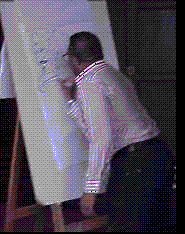
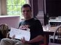
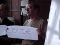
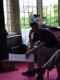
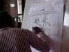
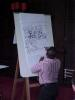

caption >> caption 2001 >> Damian's photos >> Workshops
Caption, Oxford's annual small-press comics convention, was held in the Oxford Union Society, Oxford, England on the 18th and 19th of August 2001.
  Woodrow started by inviting everyone to write down the name of a cartoon character you LOVE on a slip of paper.  These were duly collected and drawn from a hat to form a "Blind Date" panel, with the people who chose them playing them on stage. Somehow we found ourselves with  Hobbes the tiger and Wile E. Coyote going out on a date to the Blackpool Tower, illustrated by Woodrow in frenetic marker-pen style. It's a format Woodrow has tested on eight-year-olds, and, as you would expect, it suited the Caption crowd splendidly.
 After Hobbes and Wile E. met their dramatic end, we still had time for another round.  This time the fickle finger of fate fingered Octobriana and Ren Hoek, on the face of it not the most obvious romantic couple. Luckily they had Jean-Paul Jennequin's flat in Paris in which to rendezvous.
Last modified 2004-06-16 |
<webmaster>


{kind=link}
{kind=link}
{kind=link}
{kind=link}
{kind=link}